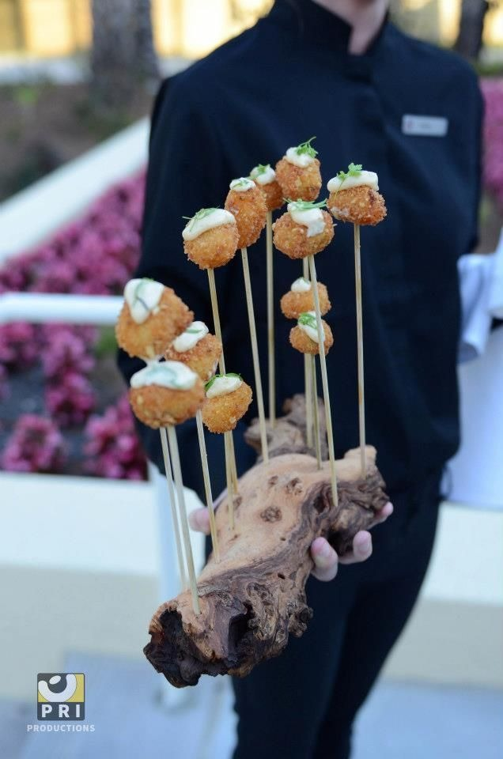

Our Story & Heritage

Somansh Girdhar
Le Cordon Bleu, Australia
• The Scindia School, Gwalior Fort
A Legacy Reimagined
Hospitality has never been just a business for me—it has been a way of life.
I was born into a family where excellence in service, relentless hard work, and unwavering integrity were not aspirations; they were everyday values. My earliest memories are of watching my grandfather, Shri Madan Lal Girdhar, build one of the first tent house businesses and wedding venues in our city. Long before luxury weddings became an industry, he taught our family that true hospitality begins with honesty, humility, and an uncompromising commitment to people.
The generations that followed transformed those principles into something even greater. My father and uncles dedicated their lives to establishing hotels, premium catering services, and landmark wedding venues across Delhi. They worked tirelessly—not simply to build successful businesses, but to redefine the standards of hospitality. Watching them devote countless days and sleepless nights to creating unforgettable experiences shaped the person I am today.
"Being born into this legacy was a privilege. Carrying it forward is my responsibility."
With that purpose in mind, I pursued an education that would broaden my understanding of culture, leadership, and global hospitality. My journey began at The Scindia School, situated within the historic Gwalior Fort—one of India’s most iconic symbols of heritage and royalty. Living and learning in such an extraordinary environment exposed me to diverse cultures, traditions, cuisines, and the timeless elegance that defines true luxury.
Yet I knew that heritage alone would never be enough.
Determined to master the art of modern gastronomy, I continued my education at Le Cordon Bleu, Australia where I immersed myself in classical culinary techniques, international cuisines, contemporary innovation, and the discipline that defines world-class kitchens. What began as a personal ambition evolved into a global education—not only in food, but in culture, craftsmanship, service, and human connection.
Every destination, every kitchen, every mentor, and every experience became another brushstroke in the vision I was creating.
Returning to India, I had the privilege of working alongside and learning from my mentors and family—Mr. Sandeep Girdhar, Mr. Anil Girdhar, and Mr. Parth Girdhar—within our family’s hospitality enterprise, Food Art Hospitality. Their decades of experience taught me that extraordinary cuisine is only one part of exceptional hospitality. Precision, consistency, innovation, and genuine care are what transform an event into a lifelong memory.
From these experiences, The Culinary Canvas was born.
The Culinary Canvas is more than a catering company—it is the culmination of generations of dedication, global learning, and an unwavering passion for culinary excellence. It is a destination where authentic regional cuisines, international gastronomy, and contemporary culinary artistry come together under one roof, curated with the precision of fine dining and the warmth of Indian hospitality.
Our vision extends far beyond creating exceptional events.
We aspire to introduce the world’s finest cuisines to the Indian wedding industry with authenticity, craftsmanship, and respect for their origins. Equally, we seek to elevate the richness of Indian street food—celebrating its soul while presenting it with world-class refinement worthy of the global stage.
Every menu we design is a story.
Every experience we create is a canvas.
Every celebration becomes a masterpiece.
The Culinary Canvas is my dream, but it is also the continuation of my family’s journey—a legacy built over more than three decades by people who believed that hospitality is not measured by what is served, but by how it makes people feel.
This is our promise. Welcome to a world where heritage meets innovation, luxury meets authenticity, and every flavour tells a story.
Our Core Philosophy
1. Cultural Honesty
We never dilute regional flavors. Our spice recipes are sourced directly from street side families, executed using authentic techniques like open clay coal pits and iron griddles.
2. Immersive Scenography
Our food stations are works of art. We work with interior designers to design setups incorporating travertine stone, custom clay structures, brass screens, and luxury candlelight layouts.
3. Theatrical Service
Chefs operate as performance artists, finishing dishes in front of guests with culinary showmanship—liquid nitrogen freezing, smoking herbs, and hand-shaving truffles.
State-of-the-Art Kitchen Facility
Our commercial modular kitchen complies with the highest standards of international hygiene and quality. Ergonomically designed to minimize staff movement and maximize safety, our cooking zones feature specialized cooling chambers, hot-holding galleries, and a comprehensive Food Safety Management System.
This infrastructure ensures that even the most complex molecular courses and street recipe arrays are executed at scale with Michelin-level precision.

Chronicles of Celebrations
A glimpse into the landmark weddings, private receptions, and high-concept events shepherded by our studio.
Historic Weddings & Pre-Weddings
-
Mac Duggal Daughter's Celebration
An exquisite, whimsical buffet of fusion street delicacies designed to suit international designer palates.
-
PP Jewellers Pawan Gupta's Son's Event
Diverse regional street food selections featuring a rich, buttery Kanpur makhan chaat as the signature highlight.
-
OM Logistics Ajay Singhal's Daughter's Wedding
A grand street food carnival paired with an experiential wooden cask mini-vineyard and artisanal cheese board.
Signature Receptions & Corporates
-
Mankind Pharmaceutical Juneja's Reception
Next-generation fusion cuisines featuring Korean and Modern Indian delicacies served from active live kitchens.
-
Relaxo Footwear Dua's Son's Reception
A tailored dessert bar featuring an signature chocolate ball on fire that went viral among attendees.
-
Maruti Suzuki & CISF Anniversaries
Flawlessly executing massive-scale catering spreads for Maruti's business meets and CISF's 50th Anniversary.
"Food is memory. When we bite into a perfectly crisp kachori or smell wood-smoke, we are immediately pulled back to a specific street corner, a specific time, and a specific mood."
— Somansh Girdhar